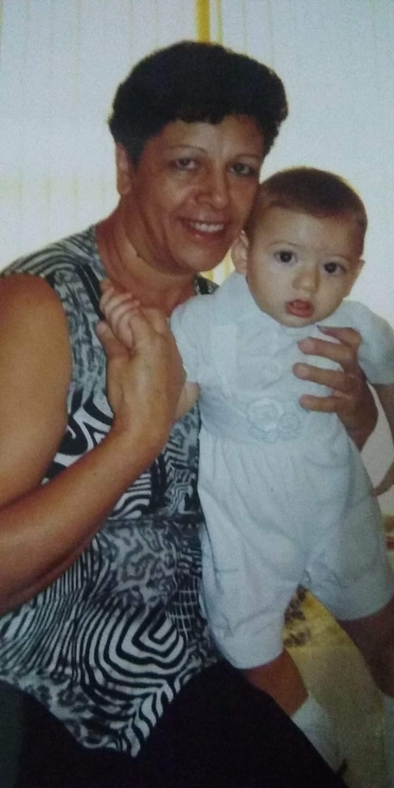
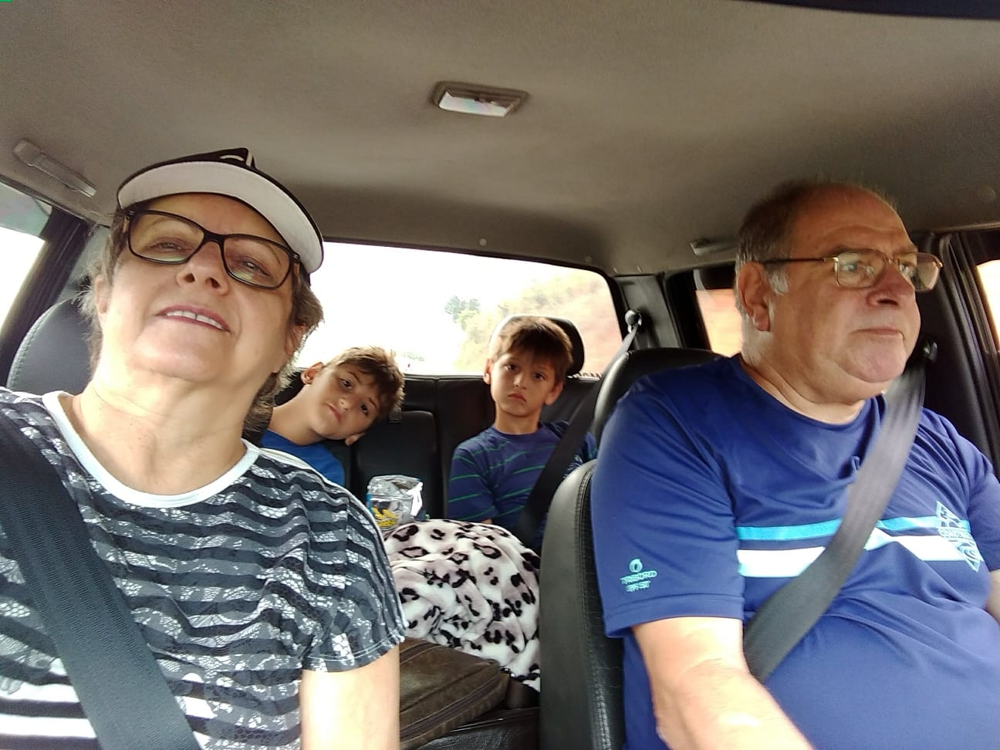

Registre seus momentos em contato com a fauna e a flora. Conte como você se sentia antes e depois, e descubra o quanto a natureza te faz bem.

 Antes
Depois
Humor antes -> Humor depois
Antes
Depois
Humor antes -> Humor depois Poste a foto do lugar: uma trilha, uma árvore, um bicho ou até a chuva caindo.
Escreva o que estava sentindo e dê uma nota para o seu humor antes e depois.
A dashboard mostra o quanto o contato com a natureza melhora o seu dia.
"Quando eu era pequeno, a minha vó Cida ficava comigo olhando a chuva. Foi ali que eu aprendi o que era calma."
- Lucas, criador do projeto"Quando a minha vó Maria me apresentou o sítio, descobri onde estava a minha calma."
- Lucas, criador do projeto
